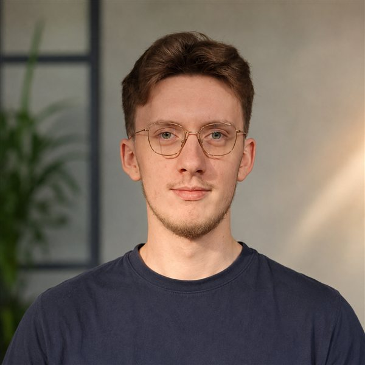

Étudiant ingénieur en 2ème année à Polytech Sorbonne (spécialité Robotique), actuellement en stage R&D robotique chez Botshare.ai à Berlin. Passionné d'informatique, de mécanique et d'électronique — j'aime partir d'une page blanche pour concevoir des systèmes de A à Z. Second-year robotics engineering student at Polytech Sorbonne, currently a robotics R&D intern at Botshare.ai in Berlin. Passionate about software, mechanics, and electronics — I love starting from a blank page to build complete systems.

Étudiant en 2ème année d'école d'ingénieur (4 ans post-bac) à Polytech Sorbonne, spécialité Robotique. Passionné par l'informatique, la mécanique et l'électronique, j'aime l'idée de partir d'une page blanche pour concevoir des projets concrets de A à Z. Second-year engineering student (4 years post-bac) at Polytech Sorbonne, Robotics. Passionate about software, mechanics, and electronics, I love the idea of starting from a blank page to build concrete projects from scratch.
Je suis actuellement en stage d'ingénieur robotique chez Botshare.ai (Berlin), où j'ai conçu le système d'accostage de précision pour recharge sans fil d'un robot mobile autonome open-source — vision + AprilTags, asservissement visuel, ROS2 / Nav2. I'm currently a robotics engineering intern at Botshare.ai (Berlin), where I designed the precision docking system for wireless charging of an open-source autonomous mobile robot — vision + AprilTags, visual servoing, ROS2 / Nav2.
Je m'investis pleinement dans ce qui me stimule, notamment en tant que trésorier de l'association Robotech, que j'ai contribué à relancer. C'est là que j'ai conçu et participé à de nombreux projets (moteur DIY, borne d'arcade, avion RC). I fully invest myself in what drives me, particularly as treasurer of the Robotech association, which I helped revive. This is where I design and participate in various hands-on projects (DIY motor, arcade cabinet, RC plane).
Face aux défis techniques, j'apprends vite et j'aime expérimenter. J'ai par ailleurs la chance de pouvoir prototyper facilement grâce au FabLab de l'école (impression 3D, découpe laser, composants à disposition). When facing technical challenges, I learn fast and love to experiment. I am also lucky enough to prototype easily thanks to my school's FabLab (3D printing, laser cutting, electronics).
openamrobot_docking (simulation Gazebo, intégration Nav2). ROS2 · Nav2 · Gazebo · Python · C/C++ · AprilTag · Vision.Open-source project OpenAMRobot (autonomous mobile robot). Designed the precision docking system for wireless charging (camera + AprilTag bundle, visual servoing); developed and documented the ROS2 package openamrobot_docking (Gazebo simulation, Nav2 integration). ROS2 · Nav2 · Gazebo · Python · C/C++ · AprilTag · Vision.Je recherche un stage de 6 mois en robotique (5ème année) à Paris pour 2027. N'hésitez pas à me contacter ! I'm looking for a 6-month robotics internship (5th year) in Paris for 2027. Feel free to reach out!